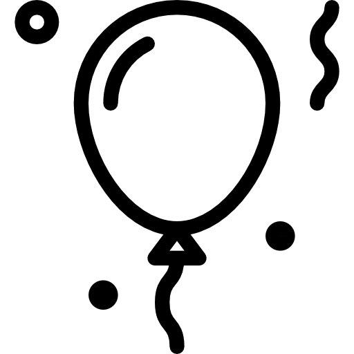

We kicked-off our UCOP MRPI Planning Grant (2025-2027) with a journal club: Leveraging California’s Linguistic Diversity to Improve Large Language Models
Past Events
Spring 2025
-
-
A new manuscript with first authors Mandy Cartner (TAU), Matthew Kogan, & Nikolas Webster and Ivy Sichel:
(LingBuzz) Subject islands do not reduce to construction-specific discourse function
Set of experimental syntax studies showing that subject islands exact a near-constant cost across multiple construction types.
-
... at the 47th GLOW Colloquium
-
... at the 38th Annual Conference on Human Sentence Processing, HSP2025, Mar 27-29, 2025, University of Maryland
Subject islands are not caused by information structure clashes: cross-constructional evidence with first authors Matthew Kogan, Mandy Cartner (TAU), and Nikolas Webster & Matt Wagers and Ivy Sichel
Ambiguity advantage effect in wh-questions with first author Joshua Lieberstein & Matt Wagers
Now you see it... ? : Agreement sensitivity in at-a-glance reading in Spanish with first author Subhekshya Shrestha & Dustin Chacón
Who gets to start the race? with first author Ruoqing Yao & Matt Wagers
-
... as did our lab alumni:
Eager interpretation of discourse-level ambiguities: New evidence for costly reanalysis, John Duff (Saarland; UCSC Ph.D. 2023) & Kelsey Sasaki (Oxford; UCSC Ph.D. 2021) (with Daniel Altshuler)
Building a Cross-Linguistic Typology of Sentence Planning from Case Alignment, Caroline Andrews (Zurich; UCSC B.A. 2011) (with Sebastian Sauppe, Roberto Zariquiey & Balthasar Bickel)
Processing Switch Reference Marking in Nungon: Comprehension & Production Measures, Adam Morgan (NYU Langone; UCSC M.A. 2013) (with Jenny Yu, Ismael Dono, Lyn Ögate, & Hannah Sarvasy)
From Single Words to Sentence Production: Shared Cortical Representations but Distinct Temporal Dynamics, Adam Morgan (NYU Langone; UCSC M.A. 2013) (with Orrin Devinsky, Werner Doyle, Patricia Dugan, Daniel Friedman, & Adeen Flinker)
Summer 2024
-
A new paper with first author Jed Sam Pizarro-Guevara out in Glossa on the Austronesian extraction restriction in Tagalog.
A tale of two Tagalogs. Glossa: a journal of general linguistics, 9(1).
Combines fieldwork, experimental syntax and computational modeling to demonstrate that there are two kinds of (very similar) grammatical systems mixing among Tagalog speakers.
-
 We started our Spencer Foundation sponsored research project Writing With ChatGPT: The Learning Promises and Perils of Co-Writing with Generative Models in College Linguistics Classes
We started our Spencer Foundation sponsored research project Writing With ChatGPT: The Learning Promises and Perils of Co-Writing with Generative Models in College Linguistics Classes
Led by PI Pranav Anand and Co-PIs Hannah Hausman and Matt Wagers, together with graduate student researchers Jajaira Reynaga & Ruoqing Yao
-
Congratulations to Stephanie Rich and Lalitha Balachandran for defending their Ph.D. dissertations and to Duygu Demiray for defending their M.A. thesis!
Lalitha Balachandran. Memory knows its bounds: encoding contexts in sentence comprehension. Ph.D. Dissertation, September 2024.
Stephanie Rich. The features we use and the features we lose: encoding, maintenance and retrieval. Ph.D. Dissertation, June 2024.
Duygu Demiray. Processing covert dependencies: a study on Turkish Wh-in-situ. M.A. Thesis, June 2024.
-
Presentations of UCSC Psycholinguistics research at the 30th Architectures and Mechanisms for Language Processing conference: AMLaP, September 4-7, 2024, Edinburgh
Processing covert dependencies: A study on Turkish wh-in-situ with first author Duygu Demiray & Matthew Wagers.
Linguistic boundaries delineate contextual domains in memory with first author Lalitha Balachandran and Matt Wagers.
Effects of foil processing, decision-making, and initial attention in the Maze task with John Duff (Saarland), Pranav Anand, & Amanda Rysling.
Linguistic boundaries reduce encoding interference in temporal order memory with first authors Stephanie Rich (Concordia) & Lalitha Balachandran and Matt Wagers.
Deprioritizing linguistic material: The role of givenness on focus & filler-gap processing with Morwenna Hoeks (Osnabrück), Maziar Toosarvandani, & Amanda Rysling.
Animacy and long-distance pronominal anaphora in discourse: Evidence from the Maze with Kelsey Sasaki (Oxford), Pranav Anand & Amanda Rysling.
Subject islands are not caused by information structure clashes: evidence from topicalization with first authors Niko Webster, Matthew Kogan & Mandy Cartner (Tel Aviv University) and Matt Wagers & Ivy Sichel.
-
Presentations of our research at the 37th Annual Conference on Human Sentence Processing: HSP2024, May 16-18, 2024, University of Michigan
Probing Facilitatory and Inhibitory Interference with English Ditransitives with first author Matthew Kogan & Matt Wagers.
Different structural boundaries have different effects on dependency resolution, with first authors Lalitha Balachandran & Jack Duff, Pranav Anand & Amanda Rysling.
Memory for violated expectations in semantic focus, with first authors Lalitha Balachandran & Morwenna Hoeks, John Boye-Lynn, Nick Van Handel, & Amanda Rysling.
Canonical Argument Alignment Modulates Gap, but not RP, Acceptability in English, with first author Matthew Kogan, Mandy Cartner, Ivy Sichel, Maziar Toosarvandani, & Matt Wagers.
Processing arguments in Korean nominal predicates, with first author Nikolas Webster, Hanyoung Byun & Matt Wagers.
Delayed structural prediction for relative clauses in Santiago Laxopa Zapotec, a language with robust resumptive pronouns with first authors Jack Duff & Delaney Gomez-Jackson, Fe Silva Robles, Maziar Toosarvandani & Matt Wagers. [platform presentation]
Maybe now, not later: online processing of possibility and negation in adults and 2-year-olds, Maxime Tulling, Vishal Arvindam, and Ailís Cournane.
And from grad alumni:
Number, animacy, and individual variation in the processing of cataphora, Steven Foley, Byron Ahn, & Lauren Ackerman.
Interference effects in Tagalog reflexive processing: A visual world study, Jed Sam Pizarro-Guevara & Brian Dillon.
2023
-
Congratulations to Matthew Kogan and Elif Ulusoy for successfully defending their M.A. theses!
Matthew Kogan. Maintaining Syntactic Positions and Thematic Roles in Memory. M.A. Thesis, June 2023.
Elifnur Ulusoy. Connectivity and case effects in agreement attraction: The case of Turkish. M.A. Thesis, June 2023.
-
Presentations of our research at the 36th Annual Conference on Human Sentence Processing: HSP2023, March 9-11, 2023, University of Pittsburgh
Predictive parsing as a source for resumptive pronoun preference in Hebrew with first author Mandy Cartner (TAU), Ivy Sichel, & Maziar Toosarvandani.
The role of prediction in retrieval interference: The case of reflexive attraction, with first author Maayan Keshev (UMass) & Brian Dillon
Turkish relative clauses and the role of syntactic connectivity in agreement attraction, with first author Elifnur Ulusoy (UCSC)
2022
-
Santa Cruz Linguistics at HSP2022
Anti-local anaphors in Telugu are subject to local antecedent interference, by Vishal Arvindam & Matt Wagers (plenary) Session recording
Preposition doubling errors elicited by dependency length but not verb complexity, by Richard Bibbs & Matt Wagers
Processing focus intervention structures in Mandarin, by Yaqing Cao and Jess Law
Use/Mention ambiguities in comprehension: Evidence from agreement attraction, by John Duff & Matt Wagers
Understanding words of negotiation in context, by Allison Nguyen & Jean E. Fox Tree
"It's alive!": Animacy-based structural expectations rapidly update with context, by Stephanie Rich, Lalitha Balachandran, John Duff, Matthew Kogan, Maya Wax Cavallaro, Nicholas Van Handel & Matt Wagers
-

Congratulations to Vishal ArvindamOne of two inaugural recipients of the Gibson/Federenko Young Scholar Awards, for "outstanding scientific work as a talk at the Conference on Human Sentence Processing"! His presentation, from HSP2022, was entitled Anti-local anaphors in Telugu are subject to local antecedent interference.
View a video recording of the talk.
-
Alignment, Reanalysis and Re-encoding, talk delivered at X-PPL 2022, University of Zurich, 12-13 September, 2022; & Cornell Linguistics, 3 November, 2022
-
⁂ Congrats to 2022 graduates Dr. Nick Van Handel and Ashley Ippolito (B.A.) ⁂
-
❖ We (virtually) hosted the 35th Annual Conference on Human Sentence Processing: March 24-26, 2022! ❖
-
⁂ Congrats to 2021 graduates Drs. Jake Vincent, Tom Roberts, & Kelsey Sasaki; and Anelia Kudin, M.A.! ⁂
-
☄
New in Winter 2021Continuing in Spring 2022: r/laban occasional lab meeting on resumptive pronouns, nominal features and their interaction
co-convened with Ivy Sichel & Maziar Toosarvandani
2021
-
Santa Cruz Linguistics at CUNY2021
Task influences on lexical underspecification: Insights from the Maze and SPR, by Jack Duff, Adrian Brasoveanu, & Amanda Rysling
Guiding Implicit Prosody with Delexicalized Melodies: Evidence from a Match/Mismatch Task, by Nick Van Handel, Matt Wagers, & Amanda Rysling
Singular vs. Plural Themselves: Evidence from the Ambiguity Advantage, by Nick Van Handel, Lalitha Balachandran, Stephanie Rich, & Amanda Rysling
Decomposing the focus effect: Evidence from reading, by Morwenna Hoeks, Maziar Toosarvandani, & Amanda Rysling.
Syntactic and semantic parallelism guides filler-gap processing in coordination, by Stephanie Rich & Matt Wagers (plenary session)
2020
-
⁂ Congrats to 2020 Ph.D. graduates Drs. Steven Foley (Princeton), Margaret Kroll (Amazon), & Jed Sam Pizarro-Guevara (UMass)! ⁂
-
⿻ New NSF Award "Animacy and resumption at the border of cognition and grammar" (BCS 2019804)
Project comparing the syntax and processing of resumptive pronouns in Zapotec & Hebrew. Press release.
Collaboration with UCSC linguists Maziar Toosarvandani (PI) and Ivy Sichel (Co-PI)
August 2020 - January 2024
-
⿻ New Paper (Sep 2020): On the universality of intrusive resumption: evidence from Chamorro and Palauan
Joint with Sandra Chung. Forthcoming in Natural Language and Linguistic Theory. doi:10.1007/s11049-020-09493-9.
-
⿻ New Poster (Aug 2020): Which sentences do speakers favor? ROC analysis of d-linking in filler-gap integration.
Joint with Brian Dillon, presented at CEMS2020 (Aug 17-19, 2020).
-
Santa Cruz Linguistics at CUNY2020
Processing direct discourse: Duff, Anand, Brasoveanu, and Rysling
Prominence scales in Georgian sentence processing: Foley
Word order in Tagalog RC processing : Pizarro-Guevara
Ambiguity, underspecification and the Maze task : Van Handel, Sasaki, Duff, Anand, Rysling and Sloggett (B.A., 2010)
Discourse representation structures in memory; Linguistic skill acquisition; & Voice mismatch in VP Ellipsis : Brasoveanu, et al.
Hand-generated v. auto-maze foils in the Maze task : Sloggett, Van Handel & Rysling;
Resumption and animacy : Wagers, incorporating on-going joint work with z/lab (Foley, Pizarro-Guevara, Sasaki, & Toosarvandani).
2019 and Earlier
-
🏕 CAMP3: California Meeting on Psycholinguistics, October 26-27, 2019, at UC Santa Cruz
-
Language Diversity, Contact, and Change Workshop (14-16 June; University of Chicago Beijing Center), Tutorial Workshop on Signal Detection Theory for Syntactic Research
-
MAPLL-TCP-TL 2019 (27-28 July; Konan University)
-
CUNY2019 presentations from s/lab members: Ben-Meir & Van Handel on Clauses v. verbs in retrieval, Foley on Computing object agreement, Kroll on Evaluating truth, Rich on Structural prediction, Roberts & Bellik on Remembering prosody in discourse, Rysling on Predictive attention allocation, Rysling & Van Handel on Listeners' predictions of sentence lengths, Sasaki on Temporal comprehension in discourse, and Wagers on the Grammaticality Asymmetry.
-
The z/lab group presented their initial findings on Zapotec sentence comprehension at the LSA Annual Meeting (January 2019)
-
Pronouns in Competition workshop (UCSC; April 2018). ... Competition among pronouns in Chamorro grammar and sentence processing. , handout (variants presented at AFLA25, Academia Sinica, May 2018). UCL Lectures (UCL Linguistics, May 2017).